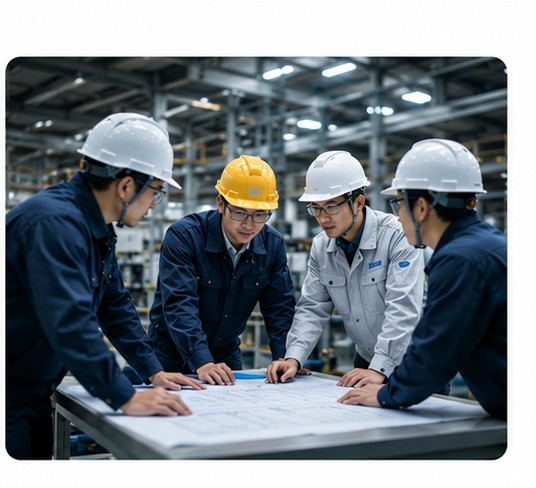

Lead Field Engineer
现场工程负责人
以产业现场的网络、通信、设备联动、施工调整为中心，负责从设计到投产后的稳定运行。
技术为现场而生
我们是现场工程、网络与通信基础设施、技术系统导入、现场运营数字化的技术合作伙伴。
| 公司名称 | 出雲創安合同会社 / Izumo Soan LLC |
|---|---|
| 所在地 | 东京都葛饰区东立石4-37-8 |
| 电话号码 | 050-1258-9122 |
| 邮箱 | info@izumosoan.com |
| 代表董事 | 松尾 峰男 |
| 法人编号 | 5011803006806 |
| 成立日期 | 2025年4月 |
| 业务内容 | 网络、通信、消防基础设施构建、技术系统导入支援、现场运营数字化、海外厂商在日本现场的实施支援 |
技术服务于现场
我们的创始团队由多年从事现场工程的工程师组成。
我们始终坚信：
真正推动社会发展的，是在实际现场持续创造价值的工作。
通信、网络、基础设施、系统导入、现场运营支援——这些工作虽然不如办公环境舒适，但直接关系到社会系统的稳定运行和持续发展。
我们尊重现场，理解现场。
因为现场不仅需要技术，还需要：
我们认为：
真正有价值的技术，必须在实际现场中长期稳定运行。
技术不应只是展示功能，还应该：
出云创安既不是纯粹的软件公司，也不是一般的施工公司。
我们的目标是成为：
「现场问题解决型工程公司」
连接现场、技术、安全与运营。
通过工程技术、技术能力和责任感，持续为社会基础设施和现场运营创造价值。
连接·守护·稳定

出云是日本最具象征意义的神话之地。出云象征着：
「创安」意为创造安全可靠的运营环境：
我们关注现场运营中最常见的四个课题

无论技术多么先进，如果不符合现场条件和运营需求，就毫无意义。

许多解决方案在导入时效果显著，但未考虑长期运营中的维护和可扩展性。

不同系统之间无法共享信息，无法看到决策所需的全局情况。

多厂商环境下的系统集成以及适应日本特有的施工惯例面临挑战。
指导技术实践的四个原则

重要的不是代码本身，而是代码在现场带来的实际变化。

仅满足技术规格是不够的。价值在于解决实际现场问题。

不仅要理解技术术语，还必须理解现场人员的需求和制约因素。

与其过度设计，不如提供现场真正需要、能够长期使用的解决方案。
为减轻创业初期的不安，我们正在推进各成员负责领域和经验的可视化。
以产业现场的网络、通信、设备联动、施工调整为中心，负责从设计到投产后的稳定运行。

在海外厂商、客户运营部门和施工团队之间进行协调，负责规格确认、进度调整和现场培训。
快速开发现场所需的改进原型，提供响应客户需求的支援。
连接现场、安全与运营的技术伙伴
出云创安致力于连接技术与实际现场，支持长期稳定运营。
当前阶段
我们目前主要提供网络、通信、消防、系统导入、现场施工、技术引进等工程服务。
随着经验和能力的积累，我们未来将进一步发展，目标是：
面向运营现场的工程技术集成公司
设计
根据客户的现场需求，协助进行系统规划、技术选型和解决方案设计。
采购
以中立立场，协助客户选择合适的产品和系统，整合不同厂商的技术资源。
建设与施工
提供可靠的现场工程服务，连接施工、系统与运营。
运营与维护
支持系统的长期稳定运行，提高现场运营的可靠性和可视化程度。
不仅仅是销售设备，
而是帮助客户构建：
安全、稳定、可持续的现场系统
从现场施工和技术导入开始，逐步成长为
连接现场、技术、安全与运营的长期工程合作伙伴